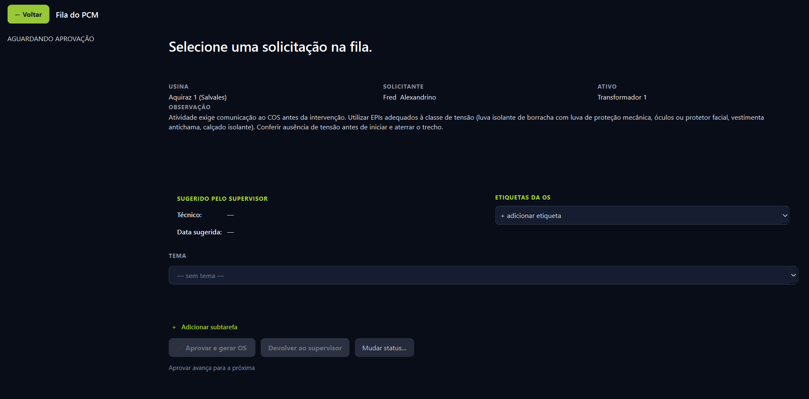
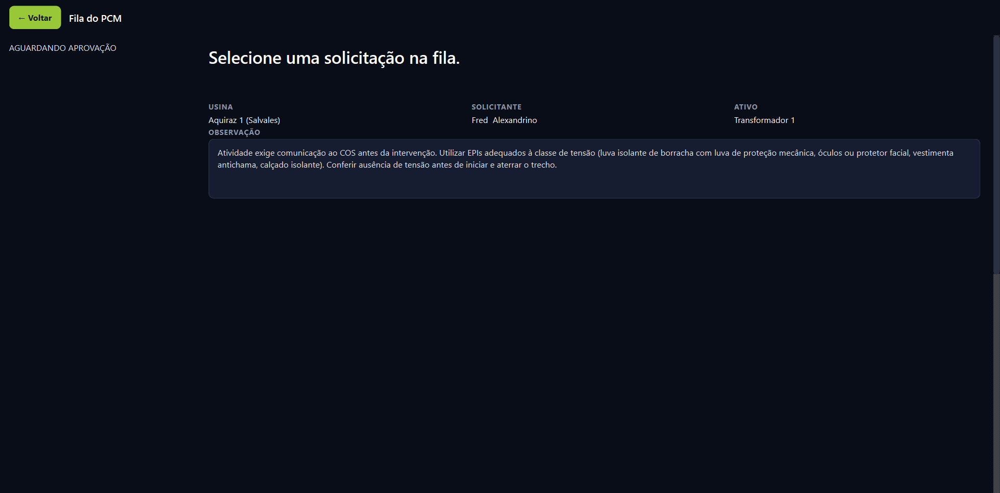
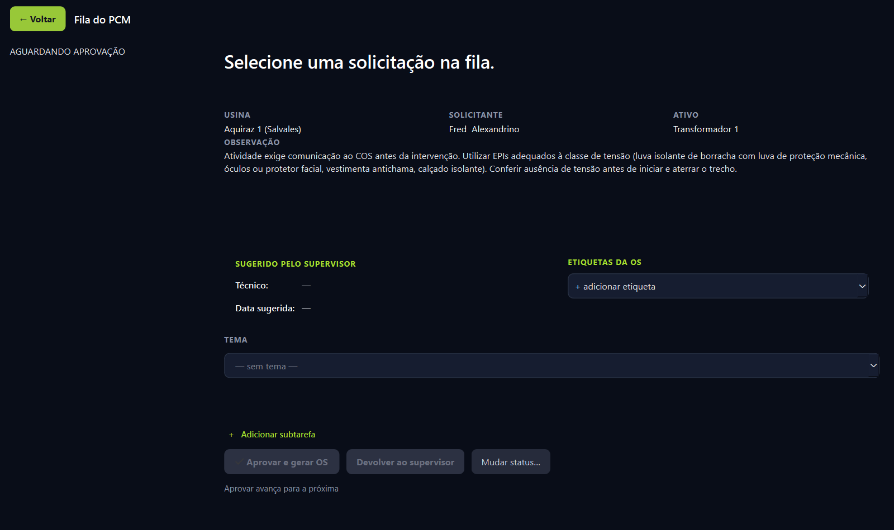
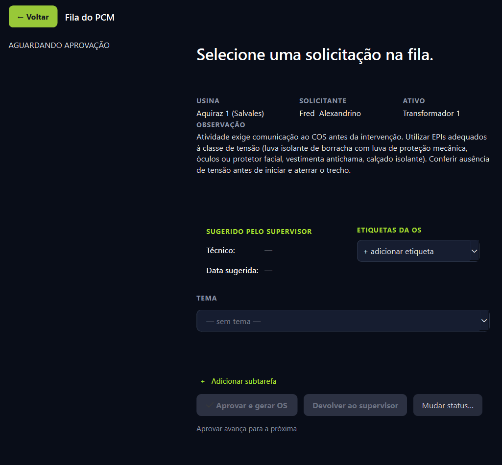

Os dois problemas tinham a mesma origem: eu pendurei texto corrido num componente feito para campo de uma linha, e a lista ao lado tinha largura fixa. Capturas da tela real, nas três larguras.
1920 pixels, que é como o app abre, maximizado.


É o que faltava antes. Agora o conteúdo se reorganiza em vez de sumir pela direita.


Onde ainda aperta: abaixo de mais ou menos 800 pixels os três botões de ação disputam a mesma faixa e começam a cortar o rótulo. Como o app abre maximizado, deixei assim. Se você usa a janela pequena com frequência, eu faço eles quebrarem em duas linhas.